Last updated: 2026-10-13
Checks: 7 0
Knit directory: data_analysis/
This reproducible R Markdown analysis was created with workflowr (version 1.7.2). The Checks tab describes the reproducibility checks that were applied when the results were created. The Past versions tab lists the development history.
Great! Since the R Markdown file has been committed to the Git repository, you know the exact version of the code that produced these results.
Great job! The global environment was empty. Objects defined in the global environment can affect the analysis in your R Markdown file in unknown ways. For reproduciblity it’s best to always run the code in an empty environment.
The command set.seed(20260612) was run prior to running
the code in the R Markdown file. Setting a seed ensures that any results
that rely on randomness, e.g. subsampling or permutations, are
reproducible.
Great job! Recording the operating system, R version, and package versions is critical for reproducibility.
Nice! There were no cached chunks for this analysis, so you can be confident that you successfully produced the results during this run.
Great job! Using relative paths to the files within your workflowr project makes it easier to run your code on other machines.
Great! You are using Git for version control. Tracking code development and connecting the code version to the results is critical for reproducibility.
The results in this page were generated with repository version 0f83588. See the Past versions tab to see a history of the changes made to the R Markdown and HTML files.
Note that you need to be careful to ensure that all relevant files for
the analysis have been committed to Git prior to generating the results
(you can use wflow_publish or
wflow_git_commit). workflowr only checks the R Markdown
file, but you know if there are other scripts or data files that it
depends on. Below is the status of the Git repository when the results
were generated:
Ignored files:
Ignored: .DS_Store
Ignored: data/.DS_Store
Untracked files:
Untracked: code/minnd_gene_program_analysis.R
Untracked: fsusie_pc_kegg_flash_batchrm.RDS
Note that any generated files, e.g. HTML, png, CSS, etc., are not included in this status report because it is ok for generated content to have uncommitted changes.
These are the previous versions of the repository in which changes were
made to the R Markdown (analysis/minnd_mash.Rmd) and HTML
(docs/minnd_mash.html) files. If you’ve configured a remote
Git repository (see ?wflow_git_remote), click on the
hyperlinks in the table below to view the files as they were in that
past version.
| File | Version | Author | Date | Message |
|---|---|---|---|---|
| Rmd | 0f83588 | Lifan Liang | 2026-10-13 | wflow_publish(c("analysis", "data", "docs")) |
We applied the MASH pipeline to handle the noise correlation induced by shared NTCs. Essentially, we follow these steps:
Given the DEG summary statistics from dream, for each pair of perturbations, we compute correlation of coefficients for genes with Z score < 2 in both perturbations. In this way, we constructed the noise correlation matrix, \(V\), among perturbations (shown as the heatmap below). The null correlation clearly cluster perturbations based on gene sets. This is induced by within-geneset contrast because each perturbation within the same gene set is contrasted with the same NTC samples.
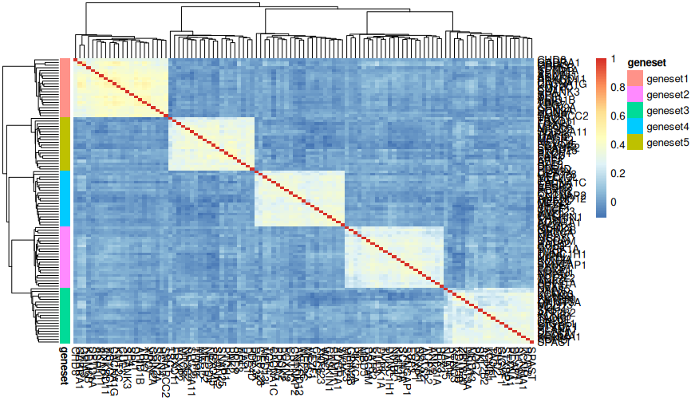
We need to construct correlation pattern for biological sharing. However, standard PCA or factor analysis do not account for the noise correlation. Here, we derive a way to incorporate the noise correlation into factor analysis by including them as fixed factor. First, following MASH notation, we have the following model for R-dimensional observed perturbation effect, \(\hat b\)
\[ \hat b_j \sim N_R(b_j, S_j V S_j^T) \]
where \(b_j\) is the true perturbation effect for the expression of gene \(j\), \(S_j\) is the standard error of \(\hat\beta\), and \(V\) is the noise correlation across \(\hat b\), shown by the heatmap above. We applied principal axis factoring to decompose the correlation matrix, \(V\) to common and unique variance:
\[ V' = AA^T + \psi \]
where \(\psi\) is a diagonal matrix indicating the proportion of \(S\) that are not shared, and \(AA^T\) is the reverse of eigen decomposition with first \(k\) eigen vectors and eigen values. We chose the \(k=12\) because the first 12 eigen values of \(V\) are above 1 (Kaiser criteria).
Using the reparameterization trick, now we have a different but equivalent way to model \(\hat b_j\):
\[
\hat b_j = b_j + S_j A \epsilon_j + S_j\psi^{1/2}\eta_j
\] where \(\epsilon_j\) and
\(\eta_j\) is a random variable
following standard Normal. In order to let flashier only
factorize on the matrix of \(b_j\), we
can model \(diag(S_j)\psi^{1/2}\eta_j\)
as as the original standard error input of flash. To
transform \(S_j A \epsilon_j\) as the
fixed factors, we use the approximated term below:
\[ S_{jg} = \frac{\sigma_j}{s_{jg}} \]
\[ [S_{j} A \epsilon_j]_{g} \approx \sum_k \epsilon'_j \sigma_j \cdot A_{gk}/s'_g \]
where \(g\) is the index for LoF perturbation target, \(\sigma_j\) is the square root of the residual of the \(j\)th gene, \(s_jg\) is the standard deviation of the gene expression values in the \(g\)th perturbation in the \(j\)th gene, and \(s'_g\) is the median of \(s_{jg}\) integrating the gene dimension. \(s'_g\) is where the approximation happen. Because \(s_{jg}=X\Sigma_j X^T\) and the design matrix, \(X\), is the same across gene expression, the aprroximation with \(s'_g\) assumes that the covariance matrix of the batch effects, \(\Sigma\), remain the same across genes.
Therefore, we used \(A_{gk}/s'_g\) as the fixed factor on
the perturbation side, and let flashier estimate \(\epsilon'_j \sigma_j\) on the gene side
with the scale mixture of Normal to account for the different scales of
\(\sigma_j\). As for the priors of the
factors for true perturbation effect, \(b_j\), we used point_normal
prior on both sides.
The 11 extra factors obtained from the factor analysis was
transformed into the covariance matrices (simply \(FF^T\) with \(F\) being the sample loading) and then
refined with the built-in extreme deconvolution in mashr.
The resulting covariance patterns were similar with the input overall.
Most covariance patterns were showing tight clusters of small groups of
perturbations. For example, the factor 4 is showing the cluster of POGZ
and MED13.
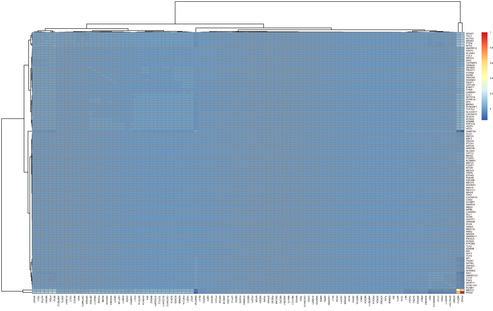
Factor 2 captures the tight cluster of NF1 and PTEN.
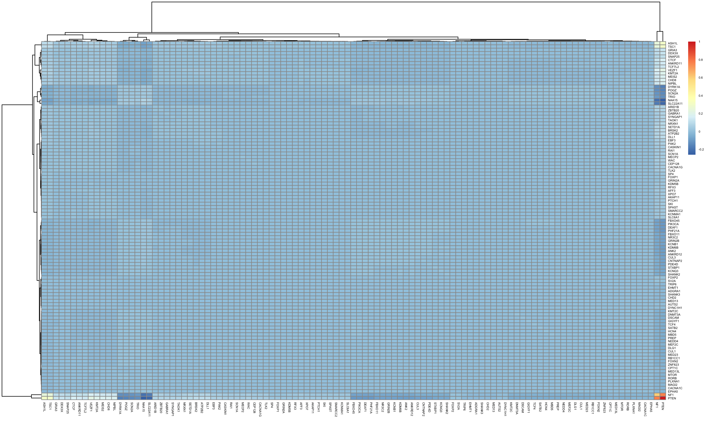
Factor 3 shows the cluster of PHF21A, DYRK1A, SNAP25, NF1, TLK2 and the cluster of TSC1, DNMT3A, PTEN, CACNA1C, SKI, POGZ, KDM6B, WAC, CHD2, GIGYF1, NAA15, SP4, KMT2A, PLXNA1 on the opposit axis. This resembles the differentiation vs. growth axis capture in our previous gene program analysis.
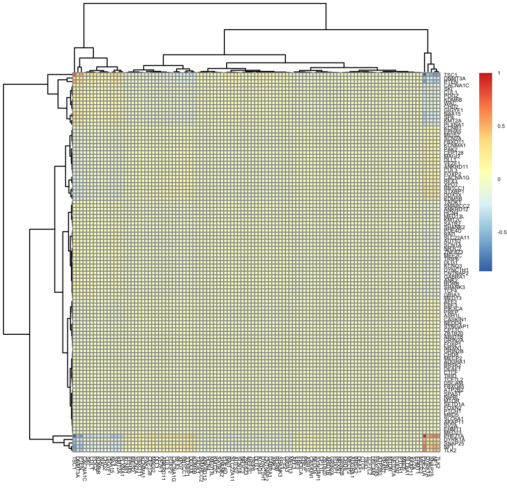
Factor 10 partly reproduced program 19 ( MED23, MED13, TLK2) in previous analysis.
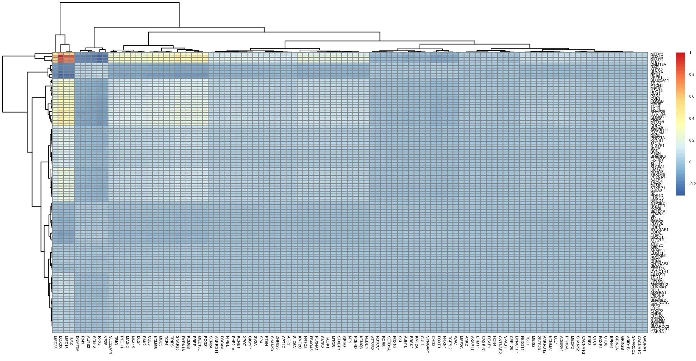
Factor 5 also features two different poles of biology that reproduces two gene program convergence but put them at the opposite poles. Different gene sets were mixed in the same cluster, hence this unlikely to be technical artefacts. * Pole A (correspond to the mediator and program 19 group, somehow POGZ is on the other pole) is led by MED23 (gs2), with MED13 (gs3), KDM6B (gs1), WAC, PLXNA1, NAA15, ARID1B, DEAF1, PIK3CA, SLC6A1, TSC1, GRIA3 and GRIN2B. A weaker extension includes MED13L, DDX3X, PTEN, TCF4, SATB2 and DYNC1H1. * Pole B (corresponds to POGZ, SNAP25 and AUTS2 group) is led by SNAP25 (gs5), with AUTS2 (gs2), POGZ (gs3), CEP128, STXBP1, TCF7L2, ATP2B2, DNMT3A, CTCF, CUL3, RORB, ASH1L, PAK2, FOXP2, BRSK2, SCN1A, NEDD4 and SP4.
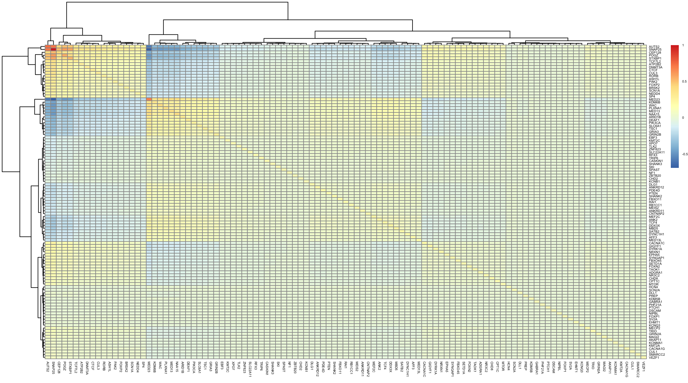
Factor 6 also features two different poles: * Pole A is led by DDX3X, with ARID1B, TLK2, XPO7, SP4, TRIO, POGZ, MED13, MED23, SMARCC2, PREP and TCF4. It covers all five gene sets: five gs1, two each from gs2, gs3 and gs4, and one gs5. Related to enhancer-activating machinery. * Pole B is led by PHF21A, with KDM6B, RAI1, CHD2, RFX3 and TSC1, from gs1, gs2, gs3 and gs5. Potentially related to corepressor.,
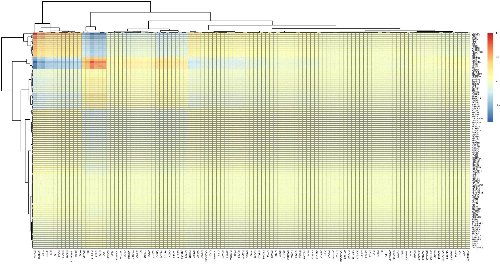
Factor 7: * Pole A is led by NIPBL (gs2), with ASH1L, DLL1, ANKRD11 and CACNA1G (all gs1). * Pole B is led by NF1 (gs2), with TLK2 (gs2), CHD8, SP4 and GRIA3 (gs1), and CACNA1C (gs4).
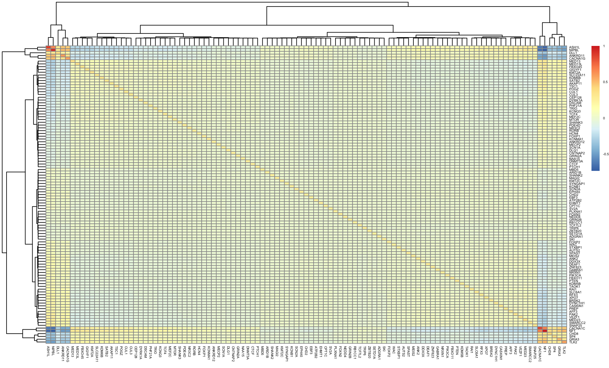
Factor 8 clusters perturbations associated to program 22 and program 17. * Pole A: PHF21A (gs2), DDX3X (gs4) and DNMT3A (gs3) are the strongest, with RB1CC1 (gs1), TSC1 (gs5), RFX3 (gs2), MED13 (gs3) and TCF4 (gs4). Every gene set is represented. * Opposite pole: KDM6B (gs1) is strongly opposed to the leading pole-A members. A broad weak group (MBD5, CTCF, GIGYF1, NAA15, NIPBL, KMT2A, ARID1B, PTEN, CHD2 and others) leans the same way.
Factor 9 represented weak effect barely above random. Factor 11 represented a singleton of PHF21A.
Overall, factor 1, 2, 4, 10 captured small, tight clusters of perturbations, while factor 3, 5-8 present an axis with two clusters of perturbations at different poles.
mashrCombining the ED patterns with canonical patterns (i.e. identity and singleton) and null, we fit the covariance patterns to random selected 5000 genes to estimate the prior of each pattern. Factor 6 were basically removed due to zero priors.
pi <- readRDS("data/minnd_mash_GABA_pi.RDS")
barplot(head(sort(pi,decreasing = T),20),las=2)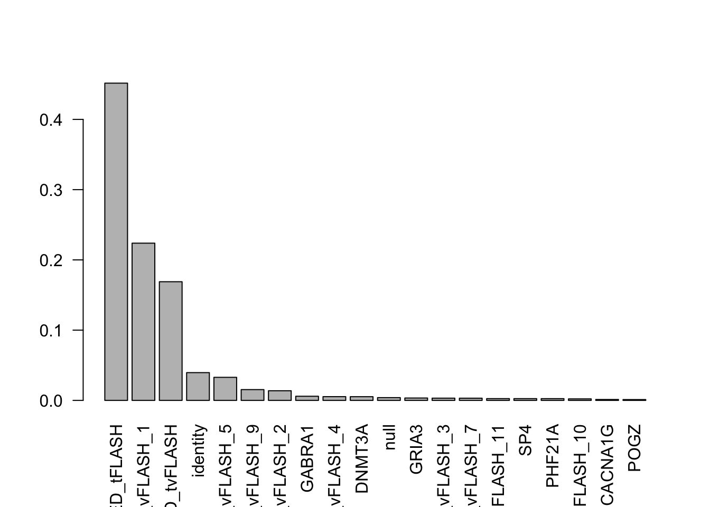
The top covariance pattern is ED_tFLASH, which summarize
all the patterns. Below is the correlation matrix of `ED_tFLASH
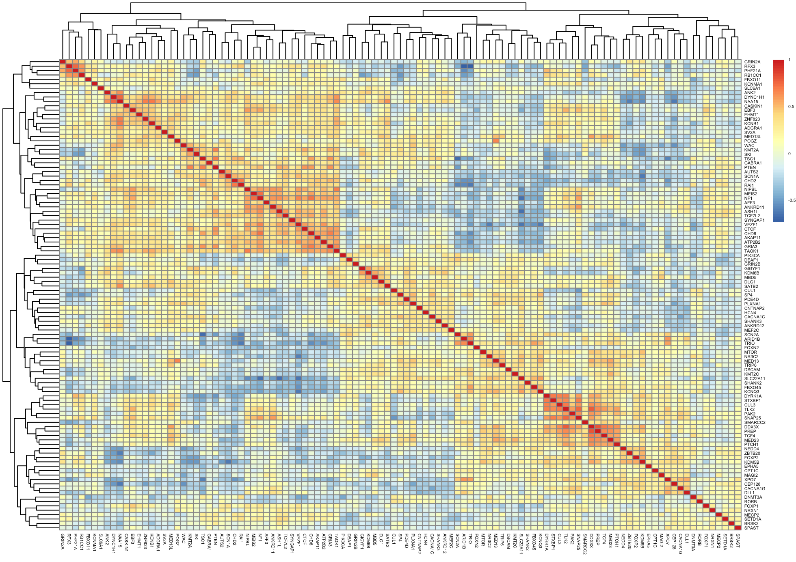
The number of DEGs has increased a lot after running MASH: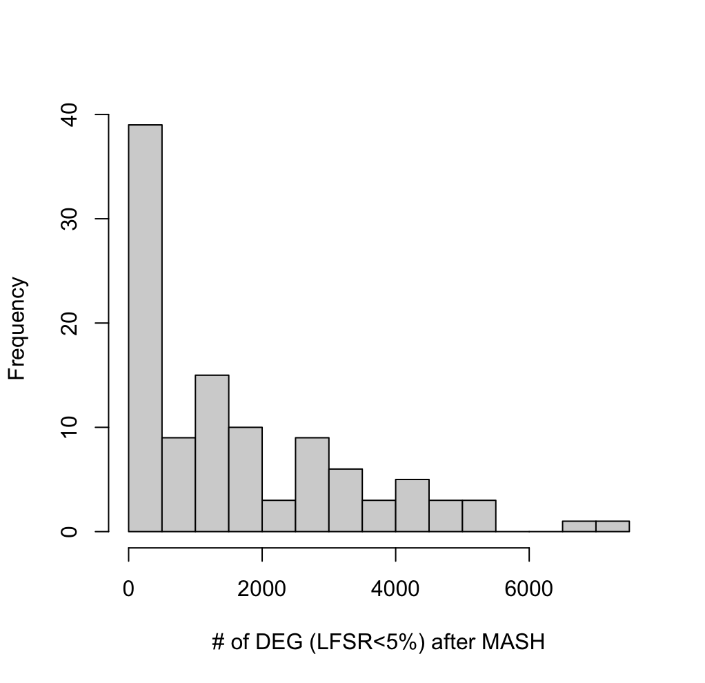
sessionInfo()R version 4.6.1 (2026-06-24)
Platform: aarch64-apple-darwin23
Running under: macOS Sequoia 15.7.7
Matrix products: default
BLAS: /System/Library/Frameworks/Accelerate.framework/Versions/A/Frameworks/vecLib.framework/Versions/A/libBLAS.dylib
LAPACK: /Library/Frameworks/R.framework/Versions/4.6/Resources/lib/libRlapack.dylib; LAPACK version 3.12.1
locale:
[1] en_US.UTF-8/en_US.UTF-8/en_US.UTF-8/C/en_US.UTF-8/en_US.UTF-8
time zone: America/Chicago
tzcode source: internal
attached base packages:
[1] stats graphics grDevices utils datasets methods base
other attached packages:
[1] workflowr_1.7.2
loaded via a namespace (and not attached):
[1] vctrs_0.7.3 httr_1.4.8 cli_3.6.6 knitr_1.51
[5] rlang_1.3.0 xfun_0.60 stringi_1.8.9 otel_0.2.0
[9] processx_3.9.0 promises_1.5.0 jsonlite_2.0.0 glue_1.8.1
[13] rprojroot_2.1.1 git2r_0.36.2 htmltools_0.5.9 httpuv_1.6.17
[17] sass_0.4.10 rmarkdown_2.31 jquerylib_0.1.4 tibble_3.3.1
[21] evaluate_1.0.5 fastmap_1.2.0 yaml_2.3.12 lifecycle_1.0.5
[25] whisker_0.4.1 stringr_1.6.0 compiler_4.6.1 fs_2.1.0
[29] pkgconfig_2.0.3 Rcpp_1.1.2 rstudioapi_0.19.0 later_1.4.8
[33] digest_0.6.39 R6_2.6.1 pillar_1.11.1 callr_3.8.0
[37] magrittr_2.0.5 bslib_0.12.0 tools_4.6.1 cachem_1.1.0
[41] getPass_0.2-4